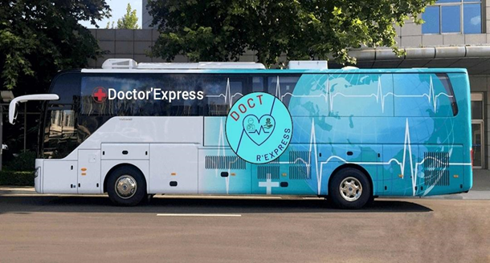

 Maps
Presentations
Maps
Presentations
 Ecran
d'accueil
Equipes
Ecran
d'accueil
Equipes
 Reseaux Sociaux
Reseaux Sociaux
 8:00
8:00

Chef de Projet : Célia
Collaboratrice : Chloé

Collaboratrice : Boueni
Collaboratrice : Amandine
Chef de Projet : José

Collaborateur : Nicolas

Collaborateur : Antoine